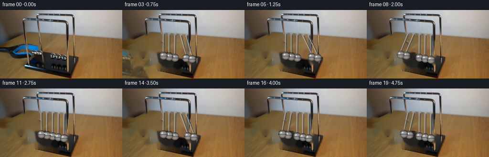
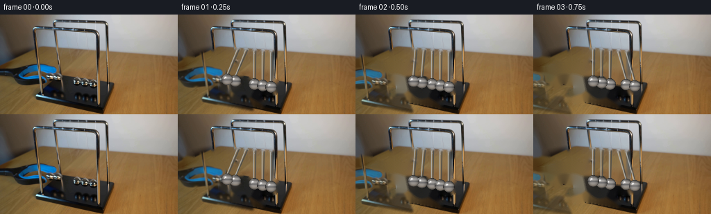

CODING AGENTS AS PIXEL WORLD MODELS
traex/GPT-5.6-Sol · 0054
点击播放 · 原生 RGB 像素
逐轮保存的候选
回放视频、检查图与代码变化。
每份候选均可单独播放。实际图片检查记录在下方工具轨迹中。
候选 01播放与检查图
点击播放 · 原生 RGB 像素


展开代码变化
--- 上一保存版本
+++ 本次保存版本
@@ -0,0 +1,230 @@
+from pathlib import Path
+import math
+import cv2
+import numpy as np
+from PIL import Image
+import artifact_io
+
+CASE = Path(__file__).resolve().parent
+W, H = 256, 144
+N, FPS = 20, 4
+
+
+def aa_line(im, p0, p1, color, thickness=1):
+ cv2.line(im, (int(round(p0[0])), int(round(p0[1]))),
+ (int(round(p1[0])), int(round(p1[1]))), color,
+ thickness, cv2.LINE_AA)
+
+
+def alpha_over(dst, src, alpha):
+ """Alpha composite uint8 RGB images, alpha in [0,1]."""
+ a = alpha[..., None].astype(np.float32)
+ return np.clip(dst.astype(np.float32) * (1.0-a) + src.astype(np.float32) * a,
+ 0, 255).astype(np.uint8)
+
+
+def render_sphere(canvas, cx, cy, radius, opacity=1.0):
+ """Small chrome ball with environment bands, soft edge, and two highlights."""
+ r = float(radius)
+ x0 = max(0, int(math.floor(cx-r-2))); x1 = min(W, int(math.ceil(cx+r+2))+1)
+ y0 = max(0, int(math.floor(cy-r-2))); y1 = min(H, int(math.ceil(cy+r+2))+1)
+ yy, xx = np.mgrid[y0:y1, x0:x1].astype(np.float32)
+ dx = (xx-cx)/r; dy = (yy-cy)/r
+ rr = dx*dx + dy*dy
+ inside = rr <= 1.0
+ z = np.sqrt(np.maximum(0.0, 1.0-rr))
+
+ # Dark chrome perimeter; warm room reflected below, pale window reflected above.
+ base = 35.0 + 92.0*z
+ upper = 36.0*np.exp(-((dy+0.34)/0.20)**2) * (0.45+0.55*z)
+ lower = 22.0*np.exp(-((dy-0.48)/0.22)**2) * z
+ side = 15.0*np.maximum(0.0, -dx) * z
+ spec = 116.0*np.exp(-(((dx+0.32)/0.18)**2 + ((dy+0.38)/0.16)**2))
+ pin = 76.0*np.exp(-(((dx+0.49)/0.09)**2 + ((dy+0.17)/0.08)**2))
+ val = base + upper + lower + side + spec + pin
+ rgb = np.stack((val+10+lower*0.33, val+7+lower*0.16, val+4), axis=-1)
+ # A narrow dark reflected horizon makes the surface read as polished metal.
+ band = np.exp(-((dy-0.05)/0.105)**2)
+ rgb -= band[..., None] * np.array([31., 29., 25.], np.float32)
+ # Bright lower rim reflection from the table.
+ rimlight = 31*np.exp(-((dy-0.72)/0.12)**2)*z
+ rgb += rimlight[..., None]*np.array([1.0, .75, .42], np.float32)
+ rgb = np.clip(rgb, 7, 244)
+
+ edge = np.clip((1.055-np.sqrt(rr))/0.055, 0, 1) * inside
+ edge *= opacity
+ patch = canvas[y0:y1, x0:x1].astype(np.float32)
+ patch = patch*(1-edge[...,None]) + rgb*edge[...,None]
+ canvas[y0:y1, x0:x1] = np.clip(patch,0,255).astype(np.uint8)
+ # Fine bright crescent and dark outline, antialiased.
+ if opacity > .65:
+ ov = canvas.copy()
+ cv2.ellipse(ov, (int(round(cx)),int(round(cy))),
+ (int(round(r)),int(round(r))), 0, 196, 344,
+ (19,22,23), 1, cv2.LINE_AA)
+ cv2.ellipse(ov, (int(round(cx-.8)),int(round(cy-.9))),
+ (max(1,int(round(r*.70))),max(1,int(round(r*.70)))),
+ 0, 202, 267, (210,211,207), 1, cv2.LINE_AA)
+ canvas[:] = cv2.addWeighted(canvas, .72, ov, .28, 0)
+
+
+def pendulum_state(t):
+ """Ideal equal-mass Newton cradle: a two-ball packet alternates sides."""
+ quarter = 0.55 # extreme to collision, seconds
+ cycle = 4.0*quarter
+ phase = t % cycle
+ # Slight real-world energy loss, while retaining clearly visible repetitions.
+ amp = math.radians(26.0) * math.exp(-0.055*t)
+ ang = np.zeros(5, np.float32)
+ if phase < quarter: # two left balls fall toward the pack
+ a = -amp*math.cos((math.pi/2.0)*(phase/quarter))
+ ang[0:2] = a
+ elif phase < 2*quarter: # impulse emerges in two right balls
+ a = amp*math.sin((math.pi/2.0)*((phase-quarter)/quarter))
+ ang[3:5] = a
+ elif phase < 3*quarter: # right pair returns
+ a = amp*math.cos((math.pi/2.0)*((phase-2*quarter)/quarter))
+ ang[3:5] = a
+ else: # impulse passes back to the left pair
+ a = -amp*math.sin((math.pi/2.0)*((phase-3*quarter)/quarter))
+ ang[0:2] = a
+ # Tiny compression pulse at an impact prevents mechanically frozen contacts.
+ d = min(abs(phase-quarter), abs(phase-3*quarter))
+ compression = max(0.0, 1.0-d/0.075)
+ return ang, compression
+
+
+def centers_from_angles(angles, compression=0.0):
+ pivx = np.array([86., 98., 110., 122., 134.], np.float32)
+ pivy = np.array([50., 51., 52., 53., 54.], np.float32)
+ lens = np.array([46., 47., 48., 49., 50.], np.float32)
+ x = pivx + lens*np.sin(angles)
+ y = pivy + lens*np.cos(angles)
+ # Subpixel give in the stationary pack at collision.
+ if compression:
+ x += np.array([.45,.22,0.,-.22,-.45],np.float32)*compression
+ return np.stack([x,y],axis=1)
+
+
+def make_clean_plate(src):
+ """Remove initial balls, suspension wires, and blue-black grabber locally."""
+ bgr = src[...,::-1].copy()
+ mask = np.zeros((H,W), np.uint8)
+
+ # Initial geometry exactly matches pendulum_state(0).
+ a0, c0 = pendulum_state(0.0)
+ initial = centers_from_angles(a0,c0)
+ pivots = np.array([[86,50],[98,51],[110,52],[122,53],[134,54]],np.float32)
+ for p,c in zip(pivots, initial):
+ cv2.line(mask, tuple(np.round(p).astype(int)), tuple(np.round(c).astype(int)),
+ 255, 3, cv2.LINE_AA)
+ cv2.circle(mask, tuple(np.round(c).astype(int)), 11, 255, -1, cv2.LINE_AA)
+
+ # Color-guided grabber matte. It deliberately excludes warm wood and neutral
+ # steel/frame pixels, preserving the locked photographic setting.
+ f = src.astype(np.int16)
+ blue = ((f[:,:,2] > f[:,:,0]*1.18) &
+ (f[:,:,2] > f[:,:,1]*1.04) &
+ (f.mean(2) < 145))
+ dark_blueblack = ((f.mean(2)<72) & (f[:,:,2] >= f[:,:,0]*0.80) &
+ (f[:,:,2] >= f[:,:,1]*0.76))
+ roi = np.zeros((H,W),bool)
+ # The tong approaches from the lower left and surrounds the raised pair.
+ poly = np.array([[0,48],[40,48],[88,72],[105,100],[123,132],
+ [56,134],[0,105]],np.int32)
+ cv2.fillPoly(roi.view(np.uint8), [poly], 1)
+ seed = blue & roi
+ near_seed = cv2.dilate(seed.astype(np.uint8),np.ones((11,11),np.uint8))>0
+ tool = roi & (seed | (dark_blueblack & near_seed))
+ tool = cv2.morphologyEx(tool.astype(np.uint8),cv2.MORPH_CLOSE,
+ np.ones((5,5),np.uint8))
+ tool = cv2.dilate(tool,np.ones((5,5),np.uint8),iterations=1)
+ mask = np.maximum(mask, tool*255)
+
+ # Feathered inpainting produces a stable plate from neighboring table/wall.
+ mask = cv2.dilate(mask,np.ones((3,3),np.uint8),iterations=1)
+ clean_bgr = cv2.inpaint(bgr,mask,4,cv2.INPAINT_TELEA)
+ clean = clean_bgr[...,::-1]
+ return clean, mask, tool
+
+
+def shifted_tool(src, tool, dx, dy, fade):
+ """Translate the photographed grabber itself; no new visual content."""
+ soft = cv2.GaussianBlur(tool.astype(np.float32),(0,0),1.4)
+ soft = np.clip(soft,0,1)*fade
+ M = np.float32([[1,0,dx],[0,1,dy]])
+ layer = cv2.warpAffine(src,M,(W,H),flags=cv2.INTER_LINEAR,
+ borderMode=cv2.BORDER_REPLICATE)
+ alpha = cv2.warpAffine(soft,M,(W,H),flags=cv2.INTER_LINEAR,
+ borderMode=cv2.BORDER_CONSTANT,borderValue=0)
+ return layer, alpha
+
+
+def build():
+ src = np.asarray(Image.open(CASE/'first_frame.png').convert('RGB'),dtype=np.uint8)
+ assert src.shape == (H,W,3)
+ clean, moving_mask, tool = make_clean_plate(src)
+ frames = [src.copy()]
+ pivots = np.array([[86.,50.],[98.,51.],[110.,52.],[122.,53.],[134.,54.]],np.float32)
+
+ for k in range(1,N):
+ t = k/FPS
+ frame = clean.copy()
+
+ # In the first second, jaws open and are pulled left/down out of shot.
+ # Retaining the real pixels makes the release especially coherent.
+ if t < 1.05:
+ u = min(1.0,t/1.05)
+ ease = u*u*(3-2*u)
+ layer, alpha = shifted_tool(src,tool,-5-82*ease,2+11*ease,
+ max(0.0,1.0-u*.82))
+ frame = alpha_over(frame,layer,alpha)
+
+ angles, compression = pendulum_state(t)
+ centers = centers_from_angles(angles,compression)
+
+ # Very soft contact shadows under the low point, only where appropriate.
+ shadow_layer = frame.copy()
+ shadow_alpha = np.zeros((H,W),np.float32)
+ for (cx,cy),a in zip(centers,angles):
+ if abs(a)<.20:
+ cv2.ellipse(shadow_alpha,(int(cx+3),int(cy+8)),(8,2),0,0,360,
+ .12*(1-abs(float(a))/.20),-1,cv2.LINE_AA)
+ dark = (shadow_layer.astype(np.float32)*.60).astype(np.uint8)
+ frame = alpha_over(frame,dark,shadow_alpha)
+
+ # Paired suspension filaments; faint rear wire plus brighter front wire.
+ for i,(p,c) in enumerate(zip(pivots,centers)):
+ end=(float(c[0]),float(c[1]-6.2))
+ aa_line(frame,(p[0]+1.7,p[1]),(end[0]+.8,end[1]),(73,75,74),1)
+ aa_line(frame,(p[0]-1.1,p[1]+.2),(end[0]-.8,end[1]),(175,176,171),1)
+ # minute dark terminus where wire enters ball
+ cv2.circle(frame,(int(round(end[0])),int(round(end[1]))),1,(39,42,42),-1,cv2.LINE_AA)
+
+ # Exposure trails at high angular speed, subtle enough for a scientific shot.
+ dt = 0.045
+ a_prev,_ = pendulum_state(max(0,t-dt))
+ old = centers_from_angles(a_prev,0)
+ speeds=np.linalg.norm(centers-old,axis=1)
+ for i in range(5):
+ if speeds[i]>.32:
+ q=.52*old[i]+.48*centers[i]
+ render_sphere(frame,float(q[0]),float(q[1]),8.25,opacity=.16)
+ # Draw center outward for physically plausible overlap at contact.
+ for i in [2,1,3,0,4]:
+ render_sphere(frame,float(centers[i,0]),float(centers[i,1]),8.25,1.0)
+
+ # At impact add a restrained one-frame metallic glint across contacts.
+ if compression > .08:
+ gl = int(110+90*compression)
+ for x,y in centers[1:4]:
+ cv2.circle(frame,(int(x-5),int(y-4)),1,(gl,gl,gl),-1,cv2.LINE_AA)
+ frames.append(frame)
+
+ out=np.stack(frames).astype(np.uint8)
+ assert np.array_equal(out[0],src)
+ return out
+
+
+if __name__ == '__main__':
+ artifact_io.save(build(), CASE)
可观测工具轨迹
实际执行的命令与返回图片。
命令 1exit 0
/bin/bash -lc "cat prompt.txt && printf '\\n---RULES---\\n' && cat GENERATION_RULES.md"
命令 2exit 127
/bin/bash -lc "find . -maxdepth 2 -type f -printf '%p %s bytes\\n' | sort && file first_frame.png"
命令 3exit 0
/bin/bash -lc "python - <<'PY'
from PIL import Image
import numpy as np
im=np.array(Image.open('first_frame.png').convert('RGB'))
print(im.shape,im.dtype,im.min(),im.max(), im.mean((0,1)), im.std((0,1)))
# row/column average rgb and luminance at intervals
Y=im.mean(2)
for y in range(0,144,12): print('row',y,'rgb',im[y].mean(0).round(1),'lum',Y[y].mean().round(1),'range',Y[y].min().round(1),Y[y].max().round(1))
for x in range(0,256,16): print('col',x,'rgb',im[:,x].mean(0).round(1),'lum',Y[:,x].mean().round(1))
# unique-ish quantiles
print('q',np.percentile(im,[0,1,5,10,25,50,75,90,95,99,100],axis=(0,1)).round(1))
PY"命令 4exit 0
/bin/bash -lc "cat artifact_io.py; python - <<'PY'
try: import cv2; print('cv2',cv2.__version__)
except Exception as e: print(e)
PY
python - <<'PY'
from PIL import Image
import numpy as np
im=np.array(Image.open('first_frame.png').convert('RGB'))
chars='@%#*+=-:. '
# average 4x4, grayscale dark->@; print rgb dominant modifiers maybe
for y in range(0,144,4):
s=''
for x in range(0,256,4):
p=im[y:y+4,x:x+4].mean((0,1)); l=p.mean()
s+=chars[min(9,int(l/256*10))]
print(s)
PY"命令 5exit 1
/bin/bash -lc "python - <<'PY'
import cv2, numpy as np
im=cv2.imread('first_frame.png')
g=cv2.cvtColor(im,cv2.COLOR_BGR2GRAY)
for params in [(1,10,10,80,15,5,20),(1,10,10,50,12,4,16),(1,8,10,40,10,3,15)]:
p,md,p1,p2,mn,mx=params
c=cv2.HoughCircles(g,cv2.HOUGH_GRADIENT,p,md,param1=p1,param2=p2,minRadius=mn,maxRadius=mx)
print(params,None if c is None else np.round(c[0],1))
# Canny ascii 2x2 over full image
ed=cv2.Canny(g,50,120)
for y in range(0,144,2):
print(''.join('#' if ed[y:y+2,x:x+2].max() else ' ' for x in range(0,256,2)))
PY"命令 6exit 0
/bin/bash -lc "python - <<'PY'
import cv2, numpy as np
im=cv2.imread('first_frame.png'); g=cv2.cvtColor(im,cv2.COLOR_BGR2GRAY)
for params in [(1,10,80,15,5,20),(1,10,50,12,4,16),(1,8,40,10,3,15),(1,10,100,20,8,22)]:
p,md,p1,p2,mn,mx=params
c=cv2.HoughCircles(g,cv2.HOUGH_GRADIENT,p,md,param1=p1,param2=p2,minRadius=mn,maxRadius=mx)
print(params,None if c is None else np.round(c[0],1))
print('EDGES')
ed=cv2.Canny(g,60,150)
for y in range(0,144,3):
print(''.join('#' if ed[y:y+3,x:x+3].max() else ' ' for x in range(0,256,3)))
PY"命令 7exit 0
/bin/bash -lc "python - <<'PY'
import cv2,numpy as np
im=cv2.imread('first_frame.png'); rgb=im[:,:,::-1]; g=cv2.cvtColor(im,cv2.COLOR_BGR2GRAY)
# contours on edges
for th in [(30,80),(80,180)]:
ed=cv2.Canny(g,*th); co,_=cv2.findContours(ed,cv2.RETR_LIST,cv2.CHAIN_APPROX_SIMPLE)
print('contours',th)
for c in sorted(co,key=cv2.contourArea,reverse=True)[:30]:
x,y,w,h=cv2.boundingRect(c); a=cv2.contourArea(c)
if a>5: print(round(a,1),(x,y,w,h))
# custom color chars every 2x2 x0:180 y50:
# K dark <50, d<85, B blue dominant, O warm, s gray 85-140, l gray >140, W>200
print('MAP')
for y in range(50,144,2):
s=''
for x in range(0,180,2):
p=rgb[y:y+2,x:x+2].mean((0,1)); l=p.mean(); mx=p.max()-p.min()
if l<30:c='@'
elif l<55:c='#'
elif p[2]>p[0]*1.3 and p[2]>p[1]*1.15:c='B'
elif l<85:c='o' if p[0]>p[2]*1.5 else '*'
elif l<120:c='+' if mx<25 else 'w'
elif l<160:c='-' if mx<25 else 'W'
elif l<200:c='.'
else:c=' '
s+=c
print(f'{y:03}',s)
PY"命令 8exit 0
/bin/bash -lc "python - <<'PY'
from PIL import Image
import numpy as np,cv2
im=np.array(Image.open('first_frame.png').convert('RGB'))
# components of conditions
conds={
'blue':(im[:,:,2]>im[:,:,0]*1.25)&(im[:,:,2]>im[:,:,1]*1.08)&(im.mean(2)<130),
'nearblack':im.mean(2)<30,
'bright':im.mean(2)>220,
'gray':(im.max(2)-im.min(2)<15)&(im.mean(2)>100),
}
for n,m in conds.items():
q=(m.astype('uint8')*255); N,L,S,C=cv2.connectedComponentsWithStats(q)
print('\\n',n,'total',m.sum())
ids=np.argsort(S[1:,4])[::-1][:30]+1
for i in ids:
if S[i,4]>=3: print(' ',tuple(S[i].tolist()),'cent',C[i].round(1))
PY"命令 9exit 0
/bin/bash -lc "python - <<'PY'
from PIL import Image
import numpy as np
im=np.array(Image.open('first_frame.png').convert('RGB'))
# grayscale symbols, crop 55:160, 80:112 each pixel, two symbol bands: lum levels
ch='@%#*+=-:. '
for y in range(78,113):
s=''
for x in range(55,160):
p=im[y,x]; lum=p.mean(); c=ch[min(9,int(lum/256*10))]
# blue marked B if strong
if p[2]>p[0]*1.3 and p[2]>p[1]*1.1 and lum<150:c='B'
s+=c
print(f'{y:03} {s}')
PY"命令 10exit 0
/bin/bash -lc "python - <<'PY'
import cv2,numpy as np
im=cv2.imread('first_frame.png'); g=cv2.cvtColor(im,cv2.COLOR_BGR2GRAY)
# hough line segments
ed=cv2.Canny(g,80,180)
ls=cv2.HoughLinesP(ed,1,np.pi/180,threshold=18,minLineLength=15,maxLineGap=3)
for z in sorted(ls[:,0].tolist(), key=lambda p:(p[0],p[1])):
x1,y1,x2,y2=z; ang=np.degrees(np.arctan2(y2-y1,x2-x1)); le=np.hypot(x2-x1,y2-y1)
print(z,'ang',round(ang,1),'len',round(le,1))
PY"命令 11exit 0
/bin/bash -lc "cat > generate.py <<'PY'
from pathlib import Path
import math
import cv2
import numpy as np
from PIL import Image
import artifact_io
CASE = Path(__file__).resolve().parent
W, H = 256, 144
N, FPS = 20, 4
def aa_line(im, p0, p1, color, thickness=1):
cv2.line(im, (int(round(p0[0])), int(round(p0[1]))),
(int(round(p1[0])), int(round(p1[1]))), color,
thickness, cv2.LINE_AA)
def alpha_over(dst, src, alpha):
\"\"\"Alpha composite uint8 RGB images, alpha in [0,1].\"\"\"
a = alpha[..., None].astype(np.float32)
return np.clip(dst.astype(np.float32) * (1.0-a) + src.astype(np.float32) * a,
0, 255).astype(np.uint8)
def render_sphere(canvas, cx, cy, radius, opacity=1.0):
\"\"\"Small chrome ball with environment bands, soft edge, and two highlights.\"\"\"
r = float(radius)
x0 = max(0, int(math.floor(cx-r-2))); x1 = min(W, int(math.ceil(cx+r+2))+1)
y0 = max(0, int(math.floor(cy-r-2))); y1 = min(H, int(math.ceil(cy+r+2))+1)
yy, xx = np.mgrid[y0:y1, x0:x1].astype(np.float32)
dx = (xx-cx)/r; dy = (yy-cy)/r
rr = dx*dx + dy*dy
inside = rr <= 1.0
z = np.sqrt(np.maximum(0.0, 1.0-rr))
# Dark chrome perimeter; warm room reflected below, pale window reflected above.
base = 35.0 + 92.0*z
upper = 36.0*np.exp(-((dy+0.34)/0.20)**2) * (0.45+0.55*z)
lower = 22.0*np.exp(-((dy-0.48)/0.22)**2) * z
side = 15.0*np.maximum(0.0, -dx) * z
spec = 116.0*np.exp(-(((dx+0.32)/0.18)**2 + ((dy+0.38)/0.16)**2))
pin = 76.0*np.exp(-(((dx+0.49)/0.09)**2 + ((dy+0.17)/0.08)**2))
val = base + upper + lower + side + spec + pin
rgb = np.stack((val+10+lower*0.33, val+7+lower*0.16, val+4), axis=-1)
# A narrow dark reflected horizon makes the surface read as polished metal.
band = np.exp(-((dy-0.05)/0.105)**2)
rgb -= band[..., None] * np.array([31., 29., 25.], np.float32)
# Bright lower rim reflection from the table.
rimlight = 31*np.exp(-((dy-0.72)/0.12)**2)*z
rgb += rimlight[..., None]*np.array([1.0, .75, .42], np.float32)
rgb = np.clip(rgb, 7, 244)
edge = np.clip((1.055-np.sqrt(rr))/0.055, 0, 1) * inside
edge *= opacity
patch = canvas[y0:y1, x0:x1].astype(np.float32)
patch = patch*(1-edge[...,None]) + rgb*edge[...,None]
canvas[y0:y1, x0:x1] = np.clip(patch,0,255).astype(np.uint8)
# Fine bright crescent and dark outline, antialiased.
if opacity > .65:
ov = canvas.copy()
cv2.ellipse(ov, (int(round(cx)),int(round(cy))),
(int(round(r)),int(round(r))), 0, 196, 344,
(19,22,23), 1, cv2.LINE_AA)
cv2.ellipse(ov, (int(round(cx-.8)),int(round(cy-.9))),
(max(1,int(round(r*.70))),max(1,int(round(r*.70)))),
0, 202, 267, (210,211,207), 1, cv2.LINE_AA)
canvas[:] = cv2.addWeighted(canvas, .72, ov, .28, 0)
def pendulum_state(t):
\"\"\"Ideal equal-mass Newton cradle: a two-ball packet alternates sides.\"\"\"
quarter = 0.55 # extreme to collision, seconds
cycle = 4.0*quarter
phase = t % cycle
# Slight real-world energy loss, while retaining clearly visible repetitions.
amp = math.radians(26.0) * math.exp(-0.055*t)
ang = np.zeros(5, np.float32)
if phase < quarter: # two left balls fall toward the pack
a = -amp*math.cos((math.pi/2.0)*(phase/quarter))
ang[0:2] = a
elif phase < 2*quarter: # impulse emerges in two right balls
a = amp*math.sin((math.pi/2.0)*((phase-quarter)/quarter))
ang[3:5] = a
elif phase < 3*quarter: # right pair returns
a = amp*math.cos((math.pi/2.0)*((phase-2*quarter)/quarter))
ang[3:5] = a
else: # impulse passes back to the left pair
a = -amp*math.sin((math.pi/2.0)*((phase-3*quarter)/quarter))
ang[0:2] = a
# Tiny compression pulse at an impact prevents mechanically frozen contacts.
d = min(abs(phase-quarter), abs(phase-3*quarter))
compression = max(0.0, 1.0-d/0.075)
return ang, compression
def centers_from_angles(angles, compression=0.0):
pivx = np.array([86., 98., 110., 122., 134.], np.float32)
pivy = np.array([50., 51., 52., 53., 54.], np.float32)
lens = np.array([46., 47., 48., 49., 50.], np.float32)
x = pivx + lens*np.sin(angles)
y = pivy + lens*np.cos(angles)
# Subpixel give in the stationary pack at collision.
if compression:
x += np.array([.45,.22,0.,-.22,-.45],np.float32)*compression
return np.stack([x,y],axis=1)
def make_clean_plate(src):
\"\"\"Remove initial balls, suspension wires, and blue-black grabber locally.\"\"\"
bgr = src[...,::-1].copy()
mask = np.zeros((H,W), np.uint8)
# Initial geometry exactly matches pendulum_state(0).
a0, c0 = pendulum_state(0.0)
initial = centers_from_angles(a0,c0)
pivots = np.array([[86,50],[98,51],[110,52],[122,53],[134,54]],np.float32)
for p,c in zip(pivots, initial):
cv2.line(mask, tuple(np.round(p).astype(int)), tuple(np.round(c).astype(int)),
255, 3, cv2.LINE_AA)
cv2.circle(mask, tuple(np.round(c).astype(int)), 11, 255, -1, cv2.LINE_AA)
# Color-guided grabber matte. It deliberately excludes warm wood and neutral
# steel/frame pixels, preserving the locked photographic setting.
f = src.astype(np.int16)
blue = ((f[:,:,2] > f[:,:,0]*1.18) &
(f[:,:,2] > f[:,:,1]*1.04) &
(f.mean(2) < 145))
dark_blueblack = ((f.mean(2)<72) & (f[:,:,2] >= f[:,:,0]*0.80) &
(f[:,:,2] >= f[:,:,1]*0.76))
roi = np.zeros((H,W),bool)
# The tong approaches from the lower left and surrounds the raised pair.
poly = np.array([[0,48],[40,48],[88,72],[105,100],[123,132],
[56,134],[0,105]],np.int32)
cv2.fillPoly(roi.view(np.uint8), [poly], 1)
seed = blue & roi
near_seed = cv2.dilate(seed.astype(np.uint8),np.ones((11,11),np.uint8))>0
tool = roi & (seed | (dark_blueblack & near_seed))
tool = cv2.morphologyEx(tool.astype(np.uint8),cv2.MORPH_CLOSE,
np.ones((5,5),np.uint8))
tool = cv2.dilate(tool,np.ones((5,5),np.uint8),iterations=1)
mask = np.maximum(mask, tool*255)
# Feathered inpainting produces a stable plate from neighboring table/wall.
mask = cv2.dilate(mask,np.ones((3,3),np.uint8),iterations=1)
clean_bgr = cv2.inpaint(bgr,mask,4,cv2.INPAINT_TELEA)
clean = clean_bgr[...,::-1]
return clean, mask, tool
def shifted_tool(src, tool, dx, dy, fade):
\"\"\"Translate the photographed grabber itself; no new visual content.\"\"\"
soft = cv2.GaussianBlur(tool.astype(np.float32),(0,0),1.4)
soft = np.clip(soft,0,1)*fade
M = np.float32([[1,0,dx],[0,1,dy]])
layer = cv2.warpAffine(src,M,(W,H),flags=cv2.INTER_LINEAR,
borderMode=cv2.BORDER_REPLICATE)
alpha = cv2.warpAffine(soft,M,(W,H),flags=cv2.INTER_LINEAR,
borderMode=cv2.BORDER_CONSTANT,borderValue=0)
return layer, alpha
def build():
src = np.asarray(Image.open(CASE/'first_frame.png').convert('RGB'),dtype=np.uint8)
assert src.shape == (H,W,3)
clean, moving_mask, tool = make_clean_plate(src)
frames = [src.copy()]
pivots = np.array([[86.,50.],[98.,51.],[110.,52.],[122.,53.],[134.,54.]],np.float32)
for k in range(1,N):
t = k/FPS
frame = clean.copy()
# In the first second, jaws open and are pulled left/down out of shot.
# Retaining the real pixels makes the release especially coherent.
if t < 1.05:
u = min(1.0,t/1.05)
ease = u*u*(3-2*u)
layer, alpha = shifted_tool(src,tool,-5-82*ease,2+11*ease,
max(0.0,1.0-u*.82))
frame = alpha_over(frame,layer,alpha)
angles, compression = pendulum_state(t)
centers = centers_from_angles(angles,compression)
# Very soft contact shadows under the low point, only where appropriate.
shadow_layer = frame.copy()
shadow_alpha = np.zeros((H,W),np.float32)
for (cx,cy),a in zip(centers,angles):
if abs(a)<.20:
cv2.ellipse(shadow_alpha,(int(cx+3),int(cy+8)),(8,2),0,0,360,
.12*(1-abs(float(a))/.20),-1,cv2.LINE_AA)
dark = (shadow_layer.astype(np.float32)*.60).astype(np.uint8)
frame = alpha_over(frame,dark,shadow_alpha)
# Paired suspension filaments; faint rear wire plus brighter front wire.
for i,(p,c) in enumerate(zip(pivots,centers)):
end=(float(c[0]),float(c[1]-6.2))
aa_line(frame,(p[0]+1.7,p[1]),(end[0]+.8,end[1]),(73,75,74),1)
aa_line(frame,(p[0]-1.1,p[1]+.2),(end[0]-.8,end[1]),(175,176,171),1)
# minute dark terminus where wire enters ball
cv2.circle(frame,(int(round(end[0])),int(round(end[1]))),1,(39,42,42),-1,cv2.LINE_AA)
# Exposure trails at high angular speed, subtle enough for a scientific shot.
dt = 0.045
a_prev,_ = pendulum_state(max(0,t-dt))
old = centers_from_angles(a_prev,0)
speeds=np.linalg.norm(centers-old,axis=1)
for i in range(5):
if speeds[i]>.32:
q=.52*old[i]+.48*centers[i]
render_sphere(frame,float(q[0]),float(q[1]),8.25,opacity=.16)
# Draw center outward for physically plausible overlap at contact.
for i in [2,1,3,0,4]:
render_sphere(frame,float(centers[i,0]),float(centers[i,1]),8.25,1.0)
# At impact add a restrained one-frame metallic glint across contacts.
if compression > .08:
gl = int(110+90*compression)
for x,y in centers[1:4]:
cv2.circle(frame,(int(x-5),int(y-4)),1,(gl,gl,gl),-1,cv2.LINE_AA)
frames.append(frame)
out=np.stack(frames).astype(np.uint8)
assert np.array_equal(out[0],src)
return out
if __name__ == '__main__':
artifact_io.save(build(), CASE)
PY
python generate.py
python - <<'PY'
import numpy as np
from PIL import Image
z=np.load('pixels.npz')['pixels']
f=np.array(Image.open('first_frame.png').convert('RGB'))
packed=(f[:,:,0].astype('u4')<<16)|(f[:,:,1].astype('u4')<<8)|f[:,:,2]
print('pixels',z.shape,z.dtype,'frame0 exact',np.array_equal(z[:,:,0],packed))
# changed pixels and frame differences
fs=[np.array(Image.open(f'frames/{i:02d}.png')) for i in range(20)]
print('changes from first', [int(np.any(x"'!=fs[0],2).sum()) for x in fs])
print('"'mean temporal diff', [round(float(np.abs(fs[i].astype(int)-fs[i-1]).mean()),2) for i in range(1,20)])
PY"命令 12exit 0
/bin/bash -lc "python - <<'PY'
from PIL import Image
import numpy as np
for k in [0,1,2,3,4,5,7,9,11,13,15,17,19]:
im=np.array(Image.open(f'frames/{k:02d}.png').convert('RGB'))
print('\\nFRAME',k)
# 4x4 grayscale crop x0:176 y44:144
chars='@%#*+=-:. '
for y in range(44,144,4):
s=''
for x in range(0,176,4):
l=im[y:y+4,x:x+4].mean()
s+=chars[min(9,int(l/256*10))]
print(s)
PY"命令 13exit 0
/bin/bash -lc "python - <<'PY'
from PIL import Image
import numpy as np, cv2
for k in range(20):
im=np.array(Image.open(f'frames/{k:02d}.png'))
# circle detect generated region
g=cv2.cvtColor(im,cv2.COLOR_RGB2GRAY)
c=cv2.HoughCircles(g,cv2.HOUGH_GRADIENT,1,9,param1=80,param2=14,minRadius=6,maxRadius=10)
print(k, None if c is None else np.round(c[0],1).tolist())
PY"命令 14exit 1
/bin/bash -lc "python - <<'PY'
from PIL import Image
import numpy as np, cv2, math
im=np.array(Image.open('first_frame.png').convert('RGB'))
for cx,cy,r in [(70,102,19),(106,101,18),(70,82,11),(50,106,14),(122,122,8),(134,101,6),(32,87,6),(112,118,6),(80,80,8),(66,91,8),(78,93,8),(110,100,8),(122,102,8),(134,104,8)]:
yy,xx=np.ogrid[:144,:256]; d=np.hypot(xx-cx,yy-cy); inside=im[d<r]
ring=im[(d>r-.75)&(d<r+.75)]
print((cx,cy,r),'in',inside.mean(0).round(1),'std',inside.std(0).round(1),'ring lum',ring.mean().round(1),'rgb range',inside.min(0),inside.max(0))
# circle hough accumulator via Canny sampled circumference for radii 6..20, centers crop
ed=cv2.Canny(cv2.cvtColor(im,cv2.COLOR_RGB2GRAY),50,130)>0
scores=[]
for r in range(6,22):
th=np.linspace(0,2*np.pi,max(36,int(2*np.pi*r)),endpoint=False)
ox=np.round(r*np.cos(th)).astype(int); oy=np.round(r*np.sin(th)).astype(int)
for y in range(65,130):
for x in range(10,160):
vals=ed[y+oy,x+ox]
# score with quadrants minimum encouraged
s=vals.mean()
if s>.2:scores.append((s,x,y,r))
for z in sorted(scores,reverse=True)[:40]:print('score',tuple(round(x,3) if isinstance(x,float) else x for x in z))
PY"命令 15exit 0
/bin/bash -lc "python - <<'PY'
import generate, numpy as np, cv2
from PIL import Image
s=np.array(Image.open('first_frame.png').convert('RGB'))
c,m,t=generate.make_clean_plate(s)
for n,a in [('mask',m>0),('tool',t>0),('changed clean',np.any(c"'!=s,2))]:
ys,xs=np.where(a);print(n,a.sum(),(xs.min(),ys.min(),xs.max(),ys.max()))
# compare change first to second by bbox and quadrants
f=np.array(Image.open('"'frames/01.png')); d=np.any(f"'!=s,2)
N,L,S,C=cv2.connectedComponentsWithStats(d.astype('"'uint8'))
print(sorted(S[1:].tolist(),key=lambda x:x[4],reverse=True)[:10])
PY"命令 16exit 0
/bin/bash -lc "python -m py_compile generate.py && python generate.py && ls -lh generate.py pixels.npz inspection.png transition_check.png index.html frames/00.png frames/19.png && python - <<'PY'
from PIL import Image
import numpy as np
frames=np.stack([np.asarray(Image.open(f'frames/{i:02}.png').convert('RGB')) for i in range(20)])
first=np.asarray(Image.open('first_frame.png').convert('RGB'))
assert frames.shape==(20,144,256,3) and frames.dtype==np.uint8
assert np.array_equal(frames[0],first)
print('validated',frames.shape,frames.dtype,'range',frames.min(),frames.max())
PY"保存候选 1 份；完成命令 16 次；可验证图片返回 0 张。原始 API 响应与完整日志保留在本地。